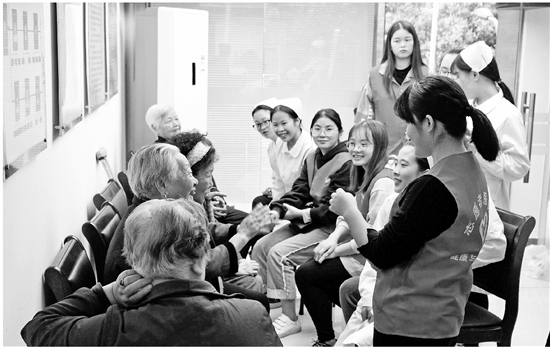

什么专业就业前景好？最近，浙江省教育评估院《2017届浙江省高校毕业生职业发展状况及人才培养质量调查报告》正式出炉，调查全省105所高校2017届27万多名大学毕业生，以及近1.5万家聘用相关高校2017届毕业生的用人单位。根据报告，2017届本科专业中有11个专业就业率达到100%，而专科专业中29个专业就业率是100%，超过本科专业。
记者在里面发现了一个专业，很有意思——老年服务与管理专业，连续两年就业率排名前10。
这不是培养老年保姆
营养中医保健都要学
陈佳波是浙江树人大学老年服务与管理专业16级学生。树人大学从2015年开始开设该专业，每年招收330名学生。2018年，老年服务与护理专业首届毕业生就业率96.35%。不久前，陈佳波以为失智老人服务的经历，获得了第十届浙江省大学生职业生涯规划与创业大赛的高职高专组职业规划类一等奖。

浙江树人大学健康与社会管理学院学生为老人服务。

热情的学生们在陪老人们谈心。
在进入树人大学之前，陈佳波是台州护士学院护理专业的学生。她告诉记者，树人大学老年服务与管理专业的大部分学生都和她一样，进大学前是护理专业的中职生，不少同学已经拿到了护士证，并且在医院实习过。
在进入大学前，身边的人对陈佳波选择老年服务与管理专业并不是很看好。“很多人认为老年服务就是老年保姆，端屎端尿非常苦。但是事实并非如此。”
陈佳波选择这个专业最初是因为对外婆的感情。她是外婆带大的，父母在很远的地方上班，有一次她哭闹得厉害，外婆抱着她走了3小时的山路赶到她父母上班的地方。“我还是孩子的时候，只会用哭闹表达情绪，现在外婆老了，渐渐记忆力也不好了，需要人照顾了。很多老人在老去的时候也会越来越像小孩，脑部器质性病变，仅靠着星星点点的记忆碎片重复拼揍着‘陌生’的每一天。他们渐渐忘记了亲爱的家人，变成了大家口中的‘痴呆老人’。他们需要的不是同情和怜悯，而是有温度、专业的护理服务。”
这恰恰是老年服务与管理专业具有的能力。进入大学以后，会有很多护理以外的课程，“例如营养膳食、中医养生、康复保健等等。”陈佳波在南京某养老机构实习了6个月，从刚开始的操作生疏、内心排斥处理大小便，到后来已经能把工作流程做顺，照顾好爷爷奶奶，也得到了同事和家属的认可。
当然，护理老人是一件很辛苦的事，每天喂饭要连哄带骗，重复性的劳动很多，搬运老人也是一件很费体力的事，经常干得筋疲力尽。“但是相处时间久了，失智症老人不一定叫得出我的名字，但是会认出我。记得有一天实习休息，小伙伴给我发来视频通话，说‘你今天休息，王爷爷想你了，要看看你！’在异地的我，瞬间眼眶湿湿的，我感觉跟王爷爷已经有了家人般的感情。”
大量养老机构出现
急需老年护理人才
其实目前杭州市场上老年护理专业毕业生工资不算高，与普通护士差不多，但老年护理和养老方向很火，从高校最近几年开设的新专业和校企合作就能看出端倪。
以树人大学为例，2017年6月成立了健康与社会管理学院，是面向大健康产业发展的新型专业学院。目前这个学院拥有护理学、社会工作、公共事业管理3个本科专业以及老年服务与管理专科专业，共有1319名学生。与此同时，学院还有两个行业学院，包括与树兰医院合作共建的树兰国际护理学院，以及与浙江省民政厅合作共建的浙江省养老与家政产业学院。
“我们现在打造的是‘医养护管大平台’。”健管学院副院长汪群龙副教授告诉记者，“大健康产业是国家的战略方向。我们国家进入老龄化社会，对老年护理的需求是持续增长的。现在的老百姓生活不单追求简单的物质生活，他们也需要更专业的服务和管理。大健康这个方向不只有养老，还包括社区服务、家庭健康等。需要培养多学科交叉的人才，来满足社会上对这些人才的需求。”
“老年服务与管理这个专业，他们本身具备了护士的技能，还需要学习老年人的生理、心理特点，同时我们也开设了《基因管理》这样的前沿课程。不但要培养学生老年护理的技能，更强调人文素养、管理运营的能力。同时，还要强调中国传统的良善、孝亲文化。他们今后可能会去从事老年护理，也可以参与养老机构的运营管理等。”汪群龙说。
其实，除了做老年护理，这个专业的学生还有许多其他的可能性。目前陈佳波正在准备专升本的考试，打算攻读管理类专业。“我在养老机构发现，有很多工作人员是年轻的大学生。现在有大量的养老新机构出现，人才需求量很大。在机构中工作一年就可以成为资深的工作人员，有不错的升职前景。”